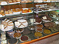
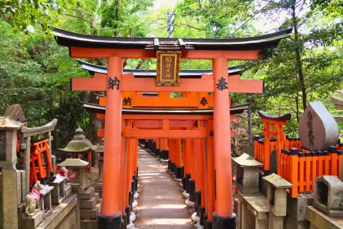
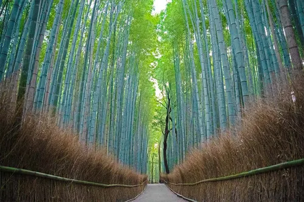
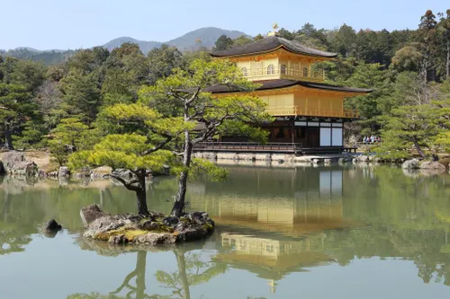
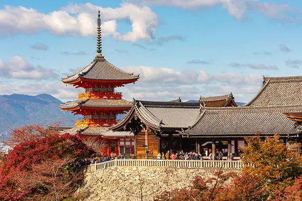
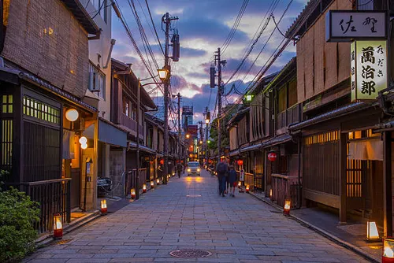

Esta es una breve crónica de mi visita a Italia. Da clic sobre las fotos minuatura para tener una vista más grande de cada fotografía. ¡Disfrúatlo!
| Imagen miniatura | Lugar | Fecha y hora aprox. de la visita | Descripción | Mapa de la ubicación |
|---|---|---|---|---|
|
Pozzarello | Julio, 12:30 p.m. (verano, calor del mediodía) | La casa en la que nos alojamos se llamaba Pozzarello y fue construida alrededor del año 1200 como hogar del jardinero que cuidaba los terrenos del castillo aledaño. Las gruesas paredes nos mantenían agradablemente frescos adentro, a pesar del calor abrasador del medio día. Esta es la vista desde la ventana de nuestra habitación. | Ver mapa: zona de Montalcino |
|
El campo Toscano | Julio, 10:00 a.m. (día soleado) | Esta es la escena del camino a Montalcino (¡todos los caminos conducen a Montalcino!). Se parece mucho a la escena del camino a Sienna, y al camino hacia la tienda de comestibles. Estábamos rodeados de hermosos paisajes durante la mayor parte del viaje. | |
|
Sienna | Julio, 4:00 p.m. (tarde soleada) | La ciudad más cercana a nuestra villa era Sienna, estaba a unos 30 minutos. Pasamos muchos días explorando las calles empinadas y torcidas, probando la cocina local en restaurantes al aire libre, y parando en la oscuridad y haciendo eco en las iglesias principales o Duomos para escapar del sol. | Ver mapa: Sienna |
 |
Postres | Julio, 11:00 a.m. (mañana, dentro de una pastelería) | Una de las mejores partes del viaje fueron las pastelerías. Esta vitrina estaba llena de tartas de frutas, pasteles de chocolate y galletas, y era imposible pasar de largo sin comprar algo. | |
|
La catedral | Julio, 1:00 p.m. (sol fuerte del mediodía) | La catedral de Sienna nos dejó sin palabras. Su fachada de mármol blanco y rosa está llena de esculturas y detalles, y afuera había puestos de recuerdos y mucha gente tomando fotos bajo el sol. | |
|
Lavanda | Julio, 6:00 p.m. (atardecer) | En el jardín de la villa había grandes matas de lavanda frente a los muros de piedra. Su aroma se sentía en toda la casa, sobre todo por las tardes. | Ver mapa: jardín de la villa |
Mi próximo viaje soñado es a Kioto, Japón, una ciudad llena de templos, jardines y tradiciones. Da clic sobre las miniaturas para ver cada foto en tamaño normal.
| Imagen miniatura | Lugar | Mejor fecha y hora para ir | Descripción | Mapa de la ubicación |
|---|---|---|---|---|
 |
Fushimi Inari | Noviembre, 7:00 a.m. (poca gente y luz suave) | Santuario famoso por sus miles de puertas torii rojas que forman largos túneles en la montaña. Quiero caminar el sendero completo hasta la cima. | Ver mapa: Kioto |
 |
Bosque de bambú de Arashiyama | Octubre, 8:00 a.m. (mañana fresca) | Sendero rodeado de bambú altísimo que se mueve con el viento. Es uno de los lugares más tranquilos y fotografiados de la ciudad. | |
 |
Kinkaku-ji (Pabellón Dorado) | Noviembre, 10:00 a.m. (hojas de otoño y sol) | Templo cubierto de hojas de oro que se refleja en un estanque. Quiero verlo en otoño, cuando los árboles de alrededor cambian de color. | |
 |
Kiyomizu-dera | Abril, 5:30 p.m. (cerezos en flor y atardecer) | Templo de madera sobre una colina con una gran terraza y vista a toda la ciudad. En primavera se llena de cerezos en flor. | |
 |
Gion | Octubre, 7:00 p.m. (noche, con faroles encendidos) | Barrio histórico de casas de madera, casas de té y geishas. Quiero pasear de noche por sus calles iluminadas con faroles. |